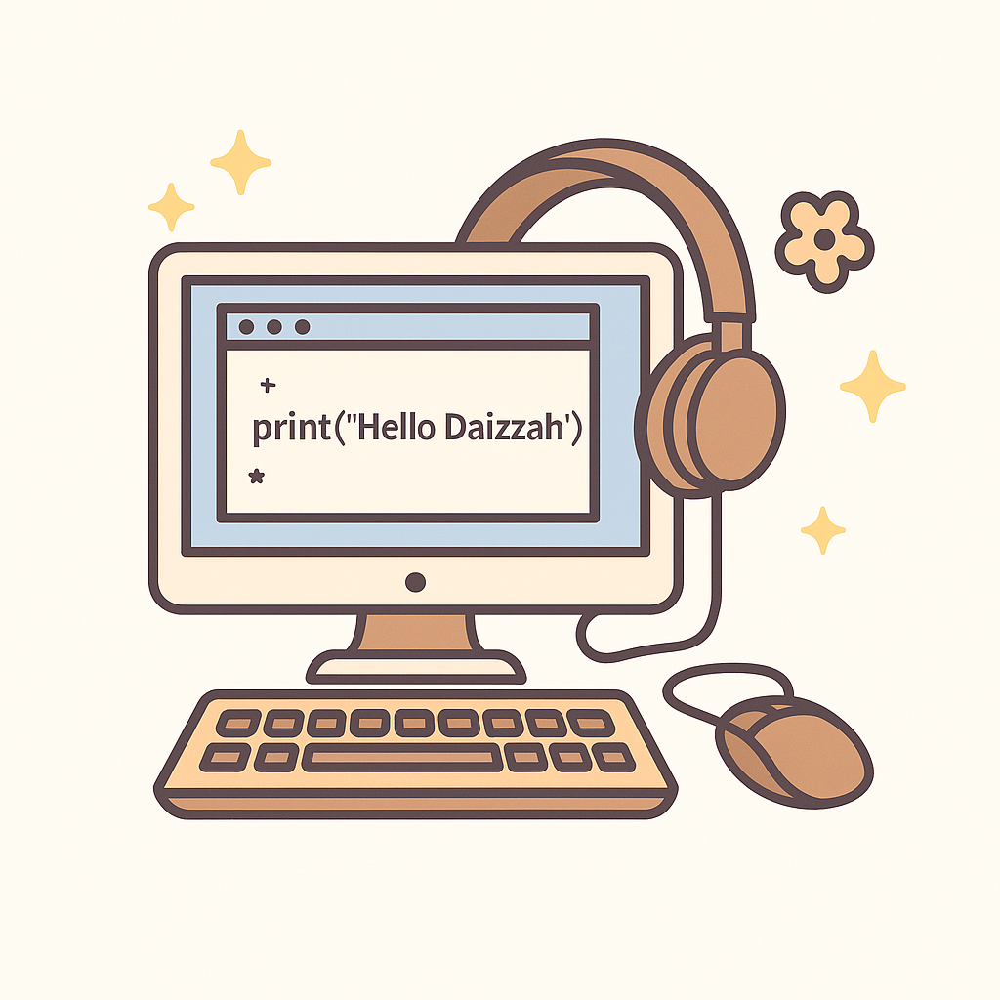

About Me

I’m a Computer Engineering grad with a love for clean code,
creative tools, and solving real problems. Whether I’m working on
web apps, frontend projects, or hardware-side logic, I care about
building things that actually make sense and feel good to use.
I’m currently focused on frontend development because it’s the
most accessible for me, and I enjoy turning concepts into
polished, interactive designs. I actually planned to pursue
Chemical Engineering at first, but a friend encouraged me to take
a chance on Computer Engineering. That decision completely shifted
my path. I fell in love with coding and stuck with it ever since.
With my engineering background, I’ve been thinking about
revisiting hardware-software integration, probably starting with a
Raspberry Pi project.
Over the past few years, I’ve worked on team-based software
projects, completed a 16-month industry internship, and developed
a full-stack web application for securely storing encrypted
medical records. Along the way, I also introduced both of my
sisters to coding and have been helping them grow, from their
first “Hello World” to building real, working projects.